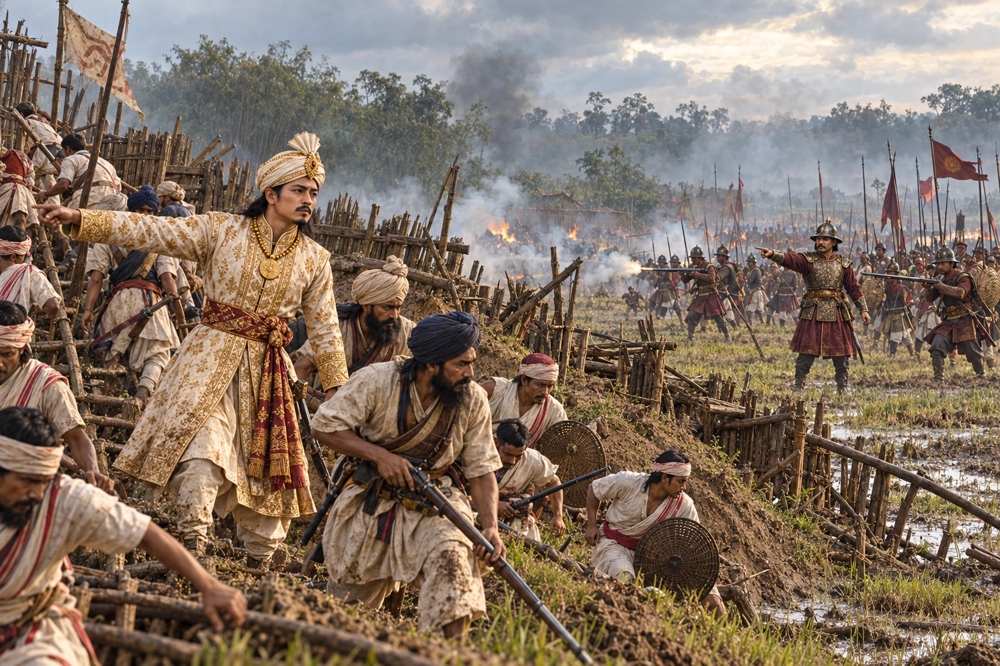

Chandrakanta's Last Stand at Mahgarh
March–April 1822 · The days of the Burmese

Chandrakanta camps at Mahgarh near Jorhat. Maha Bandula's Burmese army defeats him in April 1822 and he falls back to Guwahati.
Exact battlefield layout and Bandula’s depicted position are reconstructed. The painting does not assert a personal encounter or duel with Chandrakanta. Banners and markings are illustrative, not authenticated heraldry.
Sources
People: Chandrakanta Singha (Sudingphaa), Maha Bandula, Mingimaha Tilwa
Open this scene in the interactive archive · Follow this event on MAP